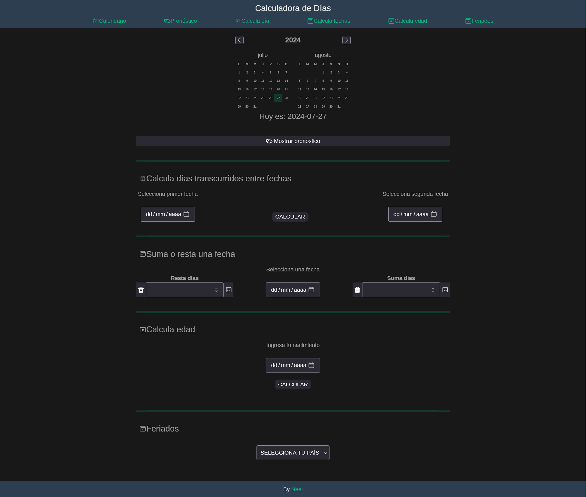
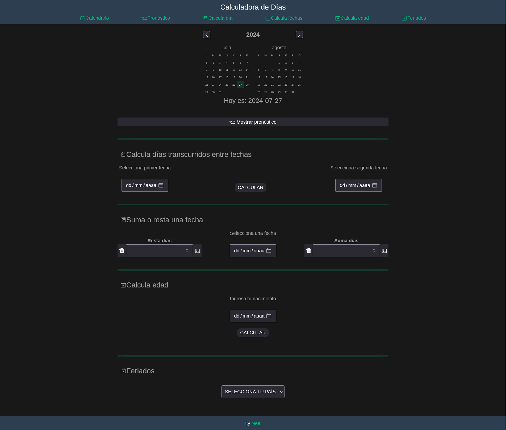
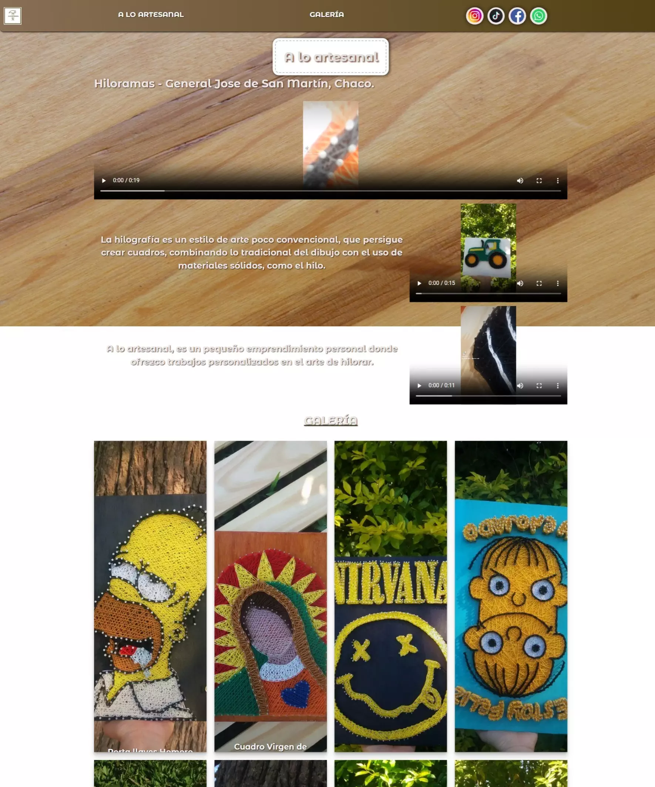
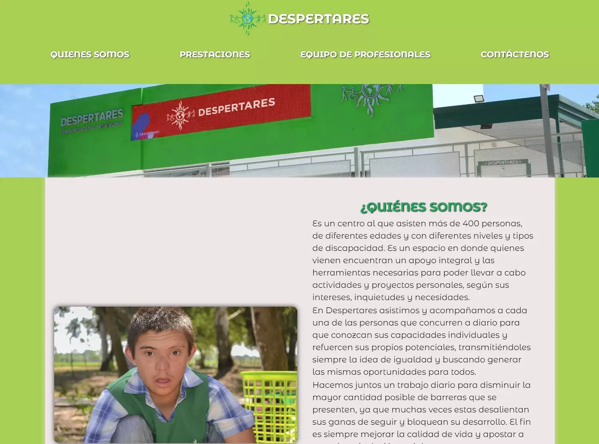
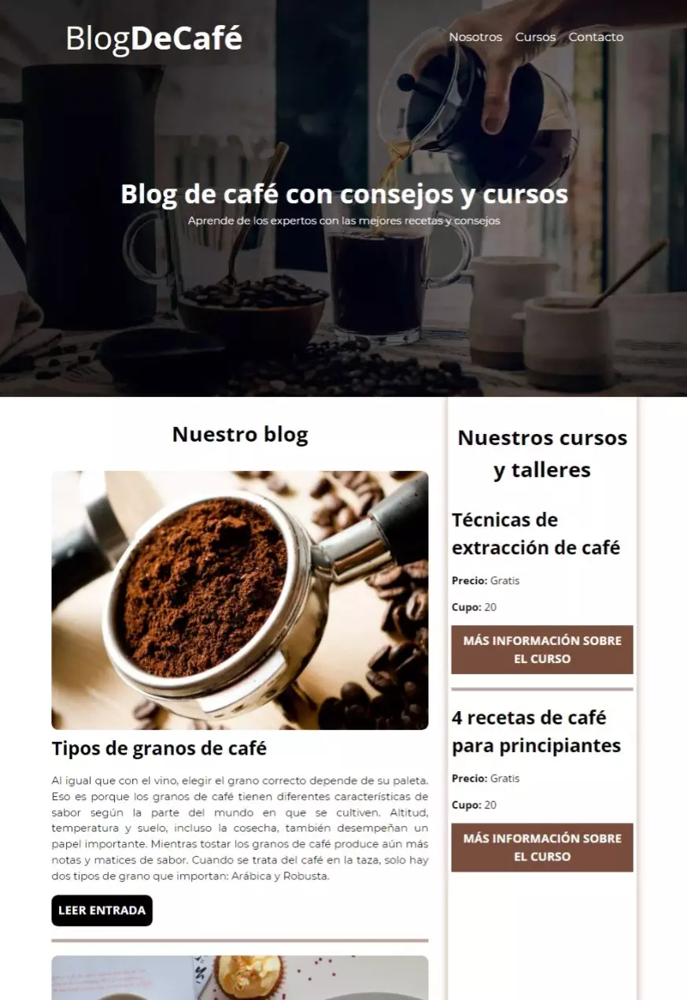
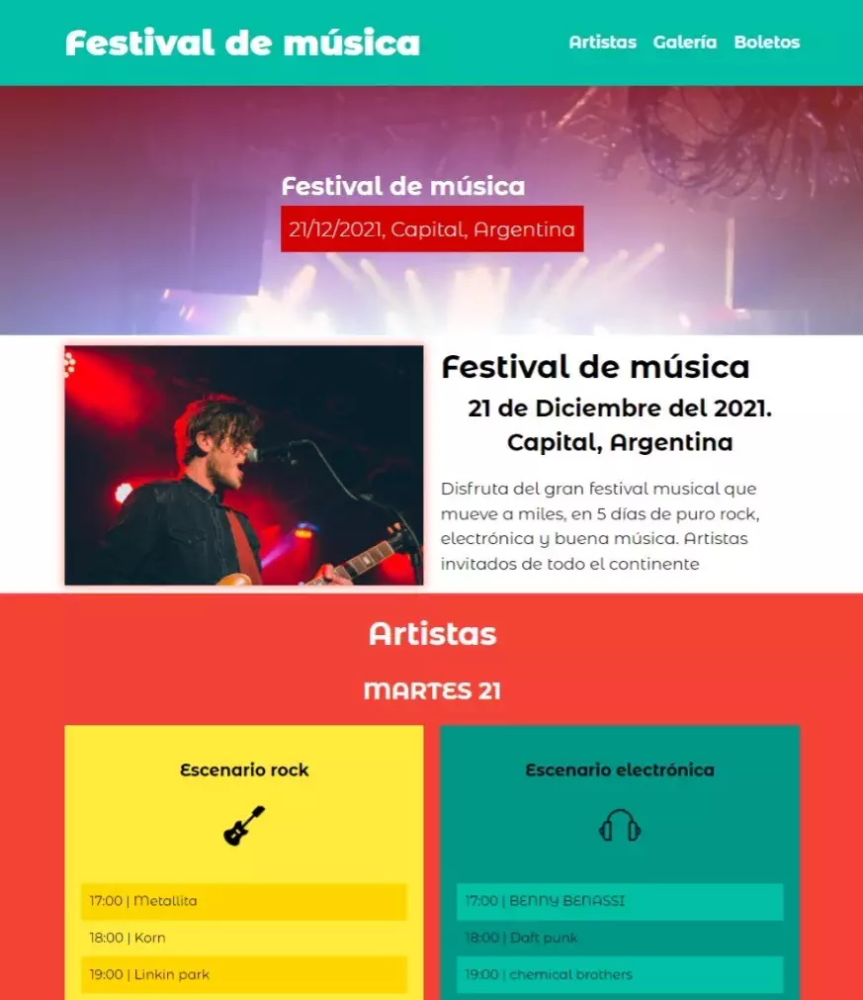
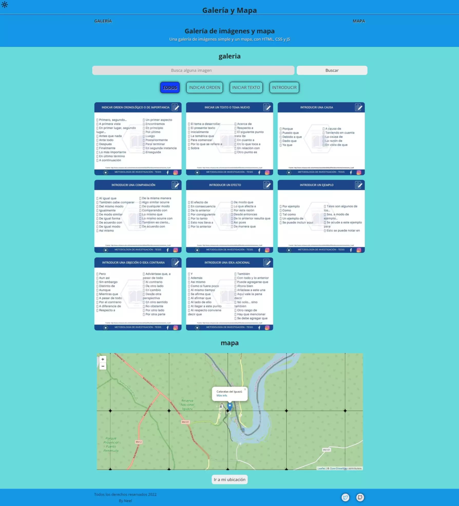
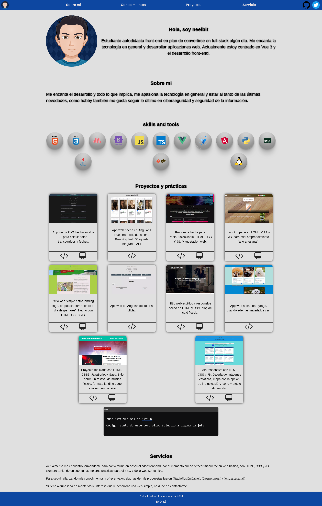

Calcula Días
App web y PWA hecha con Vue 3, para calcular días transcurridos y fechas, además, otras funcionalidades.
Me gusta estar siempre aprendiendo, actualmente estoy cursando el informatorio.
Quiero tener un enfoque aplicado siempre a mejorar la experiencia de usuario.
Me considero un apasionado por la tecnología y como hobby me gusta estar informado de todo lo que tenga que ver con la seguridad informática.
App web y PWA hecha con Vue 3, para calcular días transcurridos y fechas, además, otras funcionalidades.
Versión propia del sitio radiofusioncable.com.ar - HTML5, CSS3, y JS puro. Sitio web simple de una pagina, adaptable a dispositivos móviles (responsive design). Utilicé los recursos (imágenes, contenido texto, colores) del sitio original.

Sitio simple HTML5, CSS3, JS. Landing page de mini emprendimiento de hiloramas. Web responsive y adaptable, con varias secciones y galería de imágenes
Versión propia del sitio despertaressrl (así se veía) - HTML5, CSS3, y JS puro. Sitio web simple de una pagina adaptable a dispositivos móviles (responsive design). Utilice los recursos (imágenes, contenido texto, colores) del sitio original. Incluye mapa, RRSS y animaciones.
Práctica de un sitio web sobre café. HTML y CSS. Página web responsive y estática.
Proyecto realizado con HTML5, CSS3 y JavaScript + Sass. Sitio sobre un festival de música ficticio, formato landing page simple, sitio web responsive.
Simple sitio responsive con HTML, CSS y JS. Galería de imágenes estáticas, mapa con la opción de ir a ubicación. Galería con muuri, mapa con leafletjs, y el icono con efecto DarkMode con css puro. Sólo es una práctica de varias tareas en uno solo.
Portfolio personal hecho con Angular + CSS puro. Cuenta con varias secciones y animaciones variadas.
